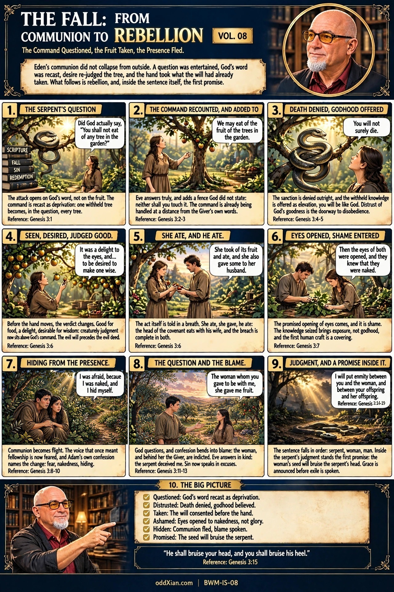

BWM-IS-08 · The Fall: From Communion to Rebellion

The plate, panel by panel
THE FALL: FROM COMMUNION TO REBELLION. VOL. 08. Subtitle: The Command Questioned, the Fruit Taken, the Presence Fled. Framing box: Eden's communion did not collapse from outside. A question was entertained, God's word was recast, desire re-judged the tree, and the hand took what the will had already taken. What follows is rebellion, and, inside the sentence itself, the first promise. Book stack (panel 1): SCRIPTURE, FALL, SIN, REDEMPTION.
- THE SERPENT'S QUESTION. Bubble: "Did God actually say, 'You shall not eat of any tree in the garden'?" Genesis 3:1. Caption: The attack opens on God's word, not on the fruit. The command is recast as deprivation: one withheld tree becomes, in the question, every tree.
- THE COMMAND RECOUNTED, AND ADDED TO. Bubble: "We may eat of the fruit of the trees in the garden." Genesis 3:2-3. Caption: Eve answers truly, and adds a fence God did not state: neither shall you touch it. The command is already being handled at a distance from the Giver's own words.
- DEATH DENIED, GODHOOD OFFERED. Bubble: "You will not surely die." Genesis 3:4-5. Caption: The sanction is denied outright, and the withheld knowledge is offered as elevation: you will be like God. Distrust of God's goodness is the doorway to disobedience.
- SEEN, DESIRED, JUDGED GOOD. Bubble: "It was a delight to the eyes, and... to be desired to make one wise." Genesis 3:6. Caption: Before the hand moves, the verdict changes. Good for food, a delight, desirable for wisdom: creaturely judgment now sits above God's command. The evil will precedes the evil deed.
- SHE ATE, AND HE ATE. Bubble: "She took of its fruit and ate, and she also gave some to her husband." Genesis 3:6. Caption: The act itself is told in a breath. She ate, she gave, he ate: the head of the covenant eats with his wife, and the breach is complete in both.
- EYES OPENED, SHAME ENTERED. Bubble: "Then the eyes of both were opened, and they knew that they were naked." Genesis 3:7. Caption: The promised opening of eyes comes, and it is shame. The knowledge seized brings exposure, not godhood, and the first human craft is a covering.
- HIDING FROM THE PRESENCE. Bubble: "I was afraid, because I was naked, and I hid myself." Genesis 3:8-10. Caption: Communion becomes flight. The voice that once meant fellowship is now feared, and Adam's own confession names the change: fear, nakedness, hiding.
- THE QUESTION AND THE BLAME. Bubble: "The woman whom you gave to be with me, she gave me fruit." Genesis 3:11-13. Caption: God questions, and confession bends into blame: the woman, and behind her the Giver, are indicted. Eve answers in kind: the serpent deceived me. Sin now speaks in excuses.
- JUDGMENT, AND A PROMISE INSIDE IT. Bubble: "I will put enmity between you and the woman, and between your offspring and her offspring." Reference: Genesis 3:14-19. Caption: The sentence falls in order: serpent, woman, man. Inside the serpent's judgment stands the first promise: the woman's seed will bruise the serpent's head. Grace is announced before exile is spoken.
- THE BIG PICTURE. Checklist: Questioned: God's word recast as deprivation. / Distrusted: Death denied, godhood believed. / Taken: The will consented before the hand. / Ashamed: Eyes opened to nakedness, not glory. / Hidden: Communion fled, blame spoken. / Promised: The seed will bruise the serpent. Closing verse: "He shall bruise your head, and you shall bruise his heel." Genesis 3:15.
Companion narrative
The Fall: From Communion to Rebellion teaches that the breach narrated in Genesis 3 is the breach of the Edenic covenant arrangement set out in BWM-IS-07: the blessed communion, placement, calling, command, promise, and warning of that volume are the order this volume shows broken, panel by panel, in the sequence Genesis itself gives. The volume stands between BWM-IS-07 (The Edenic Covenant and Human Calling), whose arrangement is here breached, and BWM-IS-09 (Closed Self-Interest: The Root of Sin), which takes up the root claim in its full form, with BWM-IS-10 (Corruption and Death) following on the inherited condition and its consequence. Doctrinal anchor: the foundational treatise, Part IV (Fall and Sin), secs. 1, 2, 9, and 10, with axioms IV.1 to IV.5 and III.5; thesis T-IV.3 governs the volume's reading: the Fall was man's own act and fault, its root pride, the evil will preceding the evil deed. Confessional anchors: Westminster Confession of Faith 6.1 and 6.2, cited as a report of the confession, with the treatise register's caveat that the confessional boundary check for ch. 6 stands as an open check, not performed.
Biblical grounding
Genesis 3:1 is the opening move: the serpent's question casts doubt on God's word, recasting the wide permission of Genesis 2:16-17 as if God had withheld every tree; the doubt is planted by a question, before any denial is spoken. Genesis 3:2-3 is Eve's recounting of the command: she states the permission, the prohibition, and the death warning, and adds the phrase neither shall you touch it, which does not appear in the command as given; the addition is established by direct textual comparison and noted for nothing more than the text supports. Genesis 3:4-5 is the serpent's contradiction and offer: the threatened death is denied outright, and being like God, knowing good and evil, is offered as what the prohibition withholds. Genesis 3:6 gives the act in its interior and exterior order: the tree is seen to be good for food, a delight to the eyes, and desired to make one wise, and then she took and ate, and gave to her husband, and he ate; the re-judging of the tree by desire precedes the hand taking the fruit in the text's own sequence. Genesis 3:7 is the immediate consequence: eyes opened, nakedness known, fig leaves sewn; opened eyes issue in shame and in a covering of their own making. Genesis 3:8-10 is hiding and the divine call: they hide from the presence of the LORD God, God calls Where are you, and Adam confesses fear in his own words. Genesis 3:11-13 is questioning and blame: Adam answers that the woman whom God gave gave him the fruit, and Eve answers that the serpent deceived her; true facts stated in a form that shifts blame. Genesis 3:14-19 gives the judgments in order, serpent, woman, man, with toil, pain, thorns, sweat, and return to dust; inside the serpent's judgment stands Genesis 3:15, the enmity and the seed who will bruise the serpent's head, so the first promise of the seed is located inside a sentence of judgment, not apart from it. Genesis 3:20-21 gives mercy inside the sentence: Adam names his wife Eve, mother of all living, and God makes garments of skins and clothes them. Genesis 3:22-24 is exile guarding the tree: the man is sent out lest he take also of the tree of life and live forever in his fallen state, and cherubim with a flaming sword guard the way; exile is both sentence and guard. Romans 5:12 is the canonical consequence read back over the whole chapter: sin came into the world through one man, and death through sin.
Doctrinal derivation
The arrangement breached is the arrangement of BWM-IS-07: God initiated blessing, placement, calling, permission, command, promise, and warning before any human response (Genesis 1:28; 2:8, 15-18), and Adam stood upright, aided, and able to stand, yet unconfirmed (treatise axiom III.5). The command and its sanction were clear as given (Genesis 2:16-17), and Genesis 3:2-3 shows the command known and recounted. The sequence in Genesis 3:6 places judgment and desire before the outward taking, so the narrative order itself supports an interior act before the exterior act. Adam acts as head, so his breach cannot remain a private matter (Romans 5:12). Consequences: communion becomes rebellion without any change in God or in the command; what changes is the creature's judgment of God's word, first doubted, then denied, then displaced by desire's own verdict. Shame, hiding, fear, and blame follow the act in that order and are its first fruits, before any sentence is pronounced. Judgment, when it comes, is spoken by God to serpent, woman, and man in turn, and it carries both consequence and, in Genesis 3:15, promise. Mercy is not postponed to a later chapter: naming, clothing, and the guarding of the tree of life all stand inside Genesis 3 itself.
Synthesis, labeled as synthesis: two elements are carried at the grades stated. The evil-will-before-evil-act framing (panels 4 and 5): Augustine states the order as a principle, that our first parents fell into open disobedience because already they were secretly corrupted, for the evil act had never been done had not an evil will preceded it, and that pride, the craving for undue exaltation, is the beginning of sin (City of God XIV.13, as reported in treatise Part IV sec. 2). As a report of Augustine the framing stands at HIGH as a report; as this volume's framing of Genesis 3:6 it is synthesis at MEDIUM. The lapsarian covenant of grace framing (panel 9): Genesis 3:15 as the point where the covenant of grace is set at the Fall and sealed by death (Hebrews 9:15) is JD's held position / synthesis at MEDIUM, per his ruling of 2026-11-13. Limits: God is not the author of sin; the fall's fault is wholly man's (thesis T-IV.3), and Adam might have stood, since it was only by his own will that he fell (Calvin, Institutes 1.15.8, as quoted in Part IV sec. 2, HIGH as a report): mutability is not defect, and providence is not an excuse. The root-of-sin thesis in its full qualified form is BWM-IS-09's subject; this volume registers it only at the grade the architecture plate assigns it, Good Consequence / synthesis, never as a motive asserted inside every act.
Claim register
| Claim | Classification | Primary support | Confidence |
| The serpent's question casts doubt on God's word | Direct teaching | Genesis 3:1 | HIGH |
| Eve recounts the command with an addition, neither shall you touch it | Direct teaching; the addition observation is textual comparison | Genesis 3:2-3, compared with Genesis 2:16-17 | HIGH; addition observation HIGH as textual comparison |
| The serpent denies death and offers being like God | Direct teaching | Genesis 3:4-5 | HIGH |
| The tree is re-judged by desire before the hand takes | Direct teaching; evil-will-before-act framing is synthesis | Genesis 3:6a; treatise Part IV sec. 2 | HIGH; synthesis MEDIUM |
| She ate and gave to her husband, and he ate | Direct teaching | Genesis 3:6b | HIGH |
| Eyes opened, shame, and a covering of their own making | Direct teaching | Genesis 3:7 | HIGH |
| Hiding from God's presence, and fear confessed | Direct teaching | Genesis 3:8-10 | HIGH |
| Blame is shifted under God's questioning | Direct teaching | Genesis 3:11-13 | HIGH |
| Judgments are spoken, with the seed promise inside the serpent's judgment | Direct teaching; lapsarian covenant of grace framing is synthesis, JD's held position | Genesis 3:14-19, esp. 3:15; Hebrews 9:15; JD ruling 2026-11-13 | HIGH; synthesis MEDIUM |
| Panel 10 checklist summarizes without new claims, closing on the seed promise; the chapter's completion (Genesis 3:20-24) is carried in the Biblical grounding | Synthesis (summary) | Panels 1-9; Genesis 3:15; Genesis 3:20-24 | HIGH |